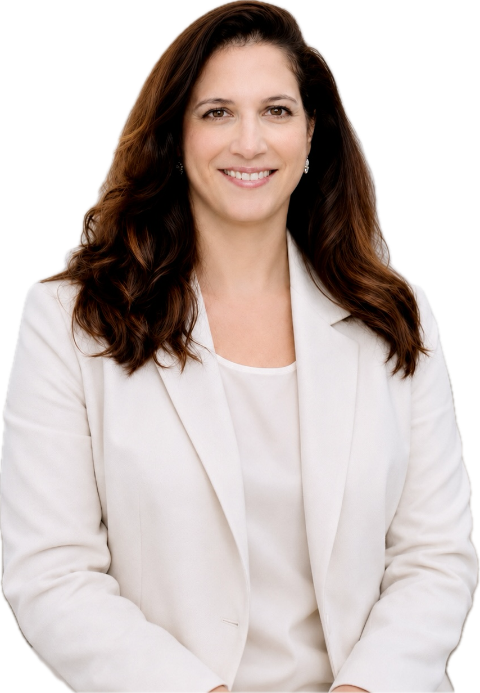

אולטרסאונד מיילדותי וגינקולוגי
מבט ראשון
לעולם חדש
ד״ר עביר מסארוה
מומחית באולטרסאונד מיילדותי וגינקולוגי
רופאה בכירה במרכז הרפואי שיבא, תל השומר

מבט מקצועי ומעמיק
חוות דעת
מה מטופלות מספרות
חוות דעת
בקרוב